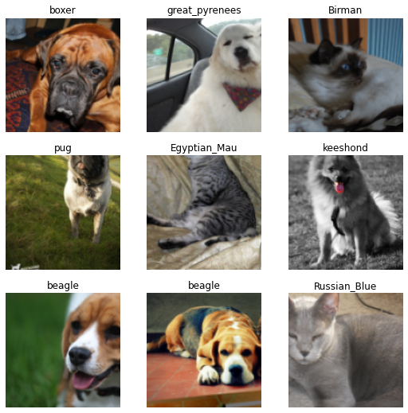
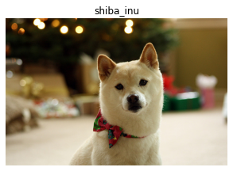
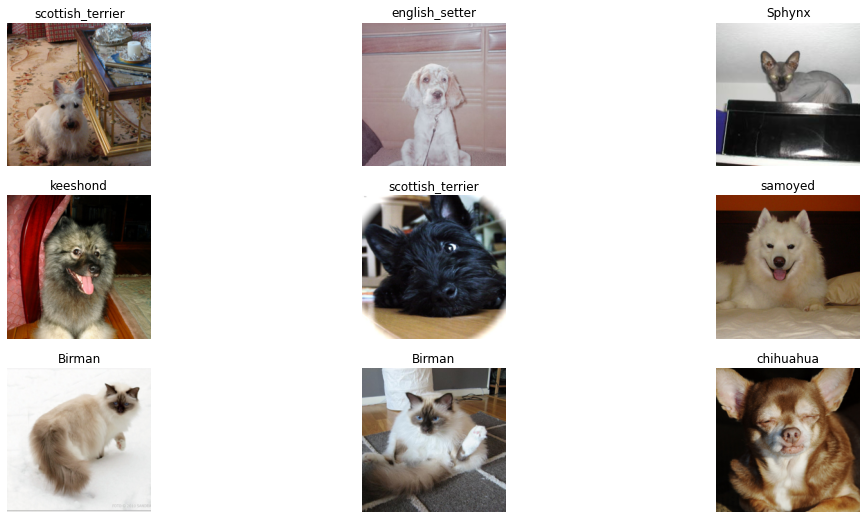

# only run this cell if you are in collab
# !pip install git+https://github.com/fastai/fastai2
# !pip install git+https://github.com/fastai/fastcoreFinding DataBlock Nirvana with fast.ai v2 - Part 1
fastai
datablock api
data
pytorch
The path to enlightment begins here!
from fastai2.vision.all import *Intoduction
Flying at 50,000 feet
At a high level, most machine learning and deep learning systems can be summed up as consisting of three primary elements. Data, an architecture/model, and a loss function. It can be visually described as such:

The data describes the information given to the model for learning a specific task, and the loss function provides the feedback necessary for the model to improve in that task via a number that tells it how well it is doing.
Why is thinking about our data pipeline important?
Simple! You can’t have a good model without a good architecture and proper loss function, but you can’t have anything without data. And getting good data that can be transformed into something modelable isn’t necessarily easy. In the slide deck presentation heard throughout the ML world, Andrej Karpathy, Senior Director of Artifical Intelligence at Tesla, put it this way:

Coming from academia and the utopia of prepared datasets ready of modeling, he found that in the real world, the bread and butter of a deep learning system and where the blood, sweat, and tears would be shed, was in the data. Data acquisition, cleaning, preparation, and the day-to-day management thereof. This same sentiment can as much be inferred from any of you that watched Jeremy Howard’s v2 walk through in late 2019{% fn 1 %}… every single session was about getting your data modelable using the new v2 bits. That should tell you a lot!
So how do we do it? How do we prepare our datasets for modeling?
While there are many ways, even with fast.ai, most indicators point to it’s DataBlock API as the answer.
What is the DataBlock API?
The DataBlock API is a blueprint for transforming your raw data into something that can fed into a model using the fast.ai framework. It is their high-level data API, one that builds upon their low-level Datasets/DataLoaders API, and also their mid-level Transform based API.
All three incorporate some new ideas for getting your data good to go, and the choice isn’t necessary one or the other.
Dropping down to 30,000 feet … what is it?
The DataBlock API consists of THREE main components: getters, transforms, and a splitters.
getters tell it how to “get” the raw data (e.g., from the file system as file paths, a Pandas DataFrame).
transforms tell it how to “transform” that raw data progressively into something that can be fed into a model (e.g., a numeric representation of your inputs and targets).
splitters define various strategies you can implore to create your training and validation datasets.
We’ll be talking a lot about transforms in this article, but one of their most interesting characteristics is that they can be defined to transform your raw data into a numerical representation (as “block transforms”), to run on your CPU when an item from your dataset is fetched (as an “item transform”) , or on the GPU after a mini-batch of your data has been collated into a square matrix and right before it is ran through your model (as a “batch transform”). In fact, there are all kinds of hooks into the data processing pipeline whereby you can apply transforms!
An example
Let’s break down one of the DataBlock examples from the documentation:
pets = DataBlock(blocks=(ImageBlock, CategoryBlock),
get_items=get_image_files,
splitter=RandomSplitter(),
get_y=Pipeline([attrgetter("name"), RegexLabeller(pat = r'^(.*)_\d+.jpg$')]),
item_tfms=Resize(128),
batch_tfms=aug_transforms())Your getters here are get_items and get_y. The first tells us that our inputs will be coming in the form of filenames returned by the get_image_files function, while the later tells the API to get the labels, or targets, for the inputs by applying a regex to the filename. There is also a get_x method available should you need to apply more specific instructions for defining your input. get_items, get_x, and get_y are all optional. Which you will need to implement depends on your data source and what you need to do to get your inputs/targets.
The splitter parameter tells us that we are going to randomly split this data with 80% for training and 20% for validation. How do I know this? Easy. In your notebook put whatever class/method you are interested followed by two ?? to see it’s source.
RandomSplitter??So we got our data and we defined how we’re going to split it for training/validation … but how do we actually turn that into something we can feed a neural network? That is where transforms come into play and there are three primary kinds:
The data transforms defined in the
blocksparameter describe how to “transform” your inputs and targets into what you really want to pass in to your model. Here we apply anImageBlockto our inputs in order to turn the filenames into numerical representations of our images and aCategoryBlockto turn our targets from string labels to a unique set of numerical indexes for each of the possible labels. Essentially what these transforms do is turn your raw data into numbers because your data HAS to be represented numerically to train any kind of ML or DL model.Next we define our item transforms via
item_tfms. Our only item transform above will resize all our images to 128x128. We do this here because we’ll need squared matrices to pass our images through our network in mini-batches (e.g., a subset of examples), and we can’t create a mini-batch of items until they are all the same shape. These transforms are applied when we fetch an individual item from one of our datasets.Lastly, we define our batch transforms via
batch_tfmsfor transforms that will be applied to a “mini-batch” of data. Above we’re saying, “There’s a bunch of cool data augmentations we want you to apply to the images in each mini-batch right before you send it through the model.” Again, these transforms are applied on the GPU against a mini-batch of items.
You can apply transforms to a variety of places in the data processing loop, but these three will satisfy your needs 90-95% of the time.
Uh, okay … so where’s the data?
Remember that the pets DataBlock is just a blueprint, a pipeline for making raw data into modelable data. How do we build something based on this blueprint? Easy. We just call our DataBlock’s dataloaders() method, passing in the one argument our get_items function, get_image_files, needs … the directory path all your images files are under.
dls = pets.dataloaders(path/"images")Once your pets DataBlock knows the “source” of your data, it goes to work. It gets your image filenames, derives each image’s label from that name, creates a training and validation dataset, and then applies the appropirate transforms, at the appropriate time, so that when you pull items from your DataLoaders object (your dls variable), you have something your model understands. This is the object you pass into your Learner to do the actual training.
Here’s some code you can run yourself in colab:
path = untar_data(URLs.PETS) # <-- Download our data; returns the path to that data
pets = DataBlock(blocks=(ImageBlock, CategoryBlock),
get_items=get_image_files,
splitter=RandomSplitter(),
get_y=Pipeline([attrgetter("name"), RegexLabeller(pat = r'^(.*)_\d+.jpg$')]),
item_tfms=Resize(128),
batch_tfms=aug_transforms())
dls = pets.dataloaders(path/"images") # <-- Tell our DataBlock where the "source" is and off it goes
dls.show_batch(max_n=9)
# dls.valid.show_batch()
The Basics - PyTorch Datasets & Dataloaders
Using the DataBlock API seems magical (well, it kinda is). We’ve seen how easy it is to build this DataLoaders object that can be used to train our models, but in order to see what it is actually going on, we need to start at the beginning, we need to see how this is done natively in PyTorch.
Don’t get confused by the similar concepts and names (e.g., Datasets, DataLoaders, transforms, etc…). Many of these ideas are built into PyTorch and extended to do much more in fast.ai. Just remember … we’re only working with PyTorch right now.
PyTorch itself provides Dataset and DataLoader classes for getting at our data and being able to iteratively run it through our model via mini-batches. Let’s see how!
Dataset
A Pytorch Dataset (see torch.utils.data.Dataset) is defined as “an abstract class representing a dataset”{% fn 2 %}. That’s just a fancy way to say it represents a collection of our data. We inherit from it and implement two key methods:
__len__: To return the size of our dataset
__getitem__: To get at a particular item in our dataset.
Let’s start breaking down our DataBlock above by converting the underlying data representation as one of these Dataset classes. We’ll import some new packages that will be using and create a PetCategories class that will allow us to map our target labels with their indexes (and vice-versa).
import pdb, re
from torchvision import transformsclass PetCategories():
def __init__(self, image_fpaths, lbl_regex):
# not all things are images
self.lbl_regex = re.compile(lbl_regex)
fpaths = [ f for f in image_fpaths if self.lbl_regex .match(f.name) ]
# build our vocab
self.vocab = dict(enumerate(set([self.lbl_regex.match(f.name).groups(0)[0]
for f in fpaths if self.lbl_regex.match(f.name) ])))
# build a reverse lookup
self.o2i = L(self.vocab.values()).val2idx()
def get_label(self, fname):
return self.lbl_regex.match(fname).groups(0)[0]class PetsDataset(torch.utils.data.Dataset):
def __init__(self, image_fpaths, pet_categories, item_tfms=None):
# not all things are images
self.fpaths = [ f for f in image_fpaths if f.name.endswith('.jpg')]
# our "item transforms"
self.tfm_pipeline = item_tfms
# our labels vocab
self.pet_categories = pet_categories
def __len__(self):
return len(self.fpaths)
def __getitem__(self, idx):
img_fpath = self.fpaths[idx]
img_label = self.pet_categories.get_label(img_fpath.name)
# you can think of this as a "block" or an "data transform"
img = Image.open(img_fpath)
lbl_idx = self.pet_categories.o2i[img_label]
if self.tfm_pipeline: img = self.tfm_pipeline(img)
return img, torch.tensor(lbl_idx)There is a lot for you to explore above (step through the code, riddle it with pdb.set_trace statements, change it up and see what happens, etc….), but note the following in particular:
__getitem__needs to return an “example”, which is two things … your inputs/targets and they both need to be tensors.item_tfmsrepresents the PyTorch (not fast.ai) transforms we need to apply to our inputs/targets. We’re going to use a special class namedComposefromtorchvisionto set these up. For now, these transforms will just make sure our images are resized to the same size and converted to a tensor. Again, there is nothing fast.ai here (with the exception of me using theLclass) … we’re just dealing with PyTorch righ now. :)Notice how we have to create our own
vocabando2imethod so we can return an integer representing the “category” rather than the category name (e.g. “Maine_Coon”) itself. Everything has to be a number!
TIP: Run all this code in colab … do it! Make sure you understand what is going on and why. One of the most valuable techniques I use for learning all things Python, PyTorch, and fast.ai, is using pdb.set_trace() to step through and debug code. It’s great way to build inutition by printing out the shapes of tensors, running parts of the code interactively, etc….
Now …we’re going to need TWO Datasets … one for training and one for validation. We’ll split our examples up randomly and set aside 20% for our validation set. There’s many ways to do this (most better and more efficient that below).
all_images = (path/'images').ls(); len(all_images)7393rnd_idxs = np.random.permutation(len(all_images)); len(rnd_idxs)7393cut = int(len(rnd_idxs) * .2); cut1478train_idxs, valid_idxs = rnd_idxs[cut:], rnd_idxs[:cut]
print(len(train_idxs), len(valid_idxs), len(train_idxs) + len(valid_idxs))5915 1478 7393TIP: Notice how I print out lengths and shapes of tensors as I go? Doing that provides both a sanity check and ensure you are seeing what you expect before going further down the rabbit hole.
Now, we can create our training and validation Datasets.
Again, we are NOT using fast.ai transforms here … these are all built into the torchvision package. They serve the same purpose here as the fast.ai “item transforms”, but for now, we’re doing this all using just the PyTorch bits.
item_tfms = transforms.Compose([
transforms.RandomResizedCrop(224),
transforms.ToTensor()
])categories = PetCategories(all_images[train_idxs], lbl_regex=r'^(.*)_\d+.jpg$')
len(categories.vocab)37train_ds = PetsDataset(all_images[train_idxs], pet_categories=categories, item_tfms=item_tfms)
valid_ds = PetsDataset(all_images[valid_idxs], pet_categories=categories, item_tfms=item_tfms)
print(len(train_ds), len(valid_ds))
print(train_ds[20][0].shape, train_ds[20][1])5913 1477
torch.Size([3, 224, 224]) tensor(33)DataLoader
With that we can create a torch.utils.data.DataLoader from each Dataset. The primary reason we need this object is to yield mini-batches of data into our model, but as you can see, it also provides us the ability to do much more (e.g., shuffle data, provide a collate function, etc…). Check out the docs for more info!
Note: fast.ai has it’s own DataLoader class that extends THIS one from PyTorch. Yah, I know it can seem confusing, but just remember for now, we are only working with functionality built-in to PyTorch.
bsz = 64
train_dl = torch.utils.data.DataLoader(train_ds, batch_size=bsz, shuffle=True)
valid_dl = torch.utils.data.DataLoader(valid_ds, batch_size=bsz*2, shuffle=False)And voila, we can now iterate through our dataset, mini-batch by mini-batch
b = next(iter(valid_dl))
len(b), b[0].shape, b[1].shape(2, torch.Size([128, 3, 224, 224]), torch.Size([128]))Wow … that took quite a bit more work than the 6 lines of code to create a DataBlock, and it’s still not as functional. For example, we haven’t built anything that can decode items, show batches, or allow us to easily adjust/extend the objects we created above.
So let’s keep going. Starting with the low-level API, we can take these PyTorch Dataset and DataLoader objects more friendly for fast.ai Learners.
Using the Low-Level API - fast.ai DataLoaders
It’s actually pretty easy to get your PyTorch Dataset class incorporated into fast.ai and get it to play nicely with fast.ai’s custom DataLoaders.
from fastai2.data.core import DataLoadersdls = DataLoaders.from_dsets(train_ds, valid_ds)b = dls.one_batch()len(b), b[0].shape, b[1].shape(2, torch.Size([64, 3, 224, 224]), torch.Size([64]))I told you it was simple, didn’t I?
Notice that we didn’t have to change anything in our PyTorch Dataset to create a DataLoaders object we can pass to our Learner for training. This is nice because it means, given a standard PyTorch Dataset, you can use all the wonderful fast.ai bits for training in less than 3 lines of code.
Tip: If you don’t care about being able to show batches, show results, and this satisfies your needs … STOP! You’re good to go. Don’t overthink you’re problem or over-engineer a solution to a problem that doesn’t necessarily exist. Remember: You don’t have to use the mid-level API or DataBlocks to use fast.ai!
Using the Mid-Level API - Converting Your Dataset into a Transform
BUT what if we want to apply/change our transforms, or run transforms on the GPU after we have a batch, or be able to visualize our data in our datasets and dataloaders or even our predictions? To begin with, we can convert our Dataset into a Transform by doing 4 things:
Inherit from
Transforminstead oftorch.utils.data.DatasetChange your
__getitem__intoencodes. According to the docs … “aTransformin fastai calls theencodesmethod when you apply it on an item (a bit like PyTorch modules call forward when applied on something).”{% fn 3 %} Here it will return the numerical representations of our data in the form of tensors.Change your return type to be a tuple and optionally use fastai’s semantic types (here we wrap our image in
TensorImagewhich knows how to show itself). From the docs: “If you then return a tuple (or a subclass of a tuple), and use fastai’s semantic type, you can then apply any other fastai’s transform on your data and it will be dispatched properly.”{% fn 4 %} That simply means we can add on more transforms that know how to work withTensorImageobjects and they’ll do the right thing.Get rid of
__len__
class PetsTransform(Transform):
def __init__(self, image_fpaths, pet_categories, item_tfms=None):
# not all things are images
self.fpaths = [ f for f in all_images if f.name.endswith('.jpg')]
# our pytorch "item transforms"
self.tfm_pipeline = item_tfms
# our labels vocab
self.pet_categories = pet_categories
def __len__(self):
return len(self.fpaths)
def encodes(self, idx):
img_fpath = self.fpaths[idx]
img_label = self.pet_categories.get_label(img_fpath.name)
# you can think of this as a "block" or an "data transform"
img = Image.open(img_fpath)
lbl_idx = self.pet_categories.o2i[img_label]
if self.tfm_pipeline: img = self.tfm_pipeline(img)
return (TensorImage(img), torch.tensor(lbl_idx))Now that we are using a Transform, we have to use a new kind of object to build our dataset: TfmdLists
A TfmdList is “just an object that lazily applies a collection of Transforms on a list.”{% fn 5 %} Think of it as a fancy Dataset object that knows how to work with Transform objects.
train_fpaths = all_images[train_idxs]
valid_fpaths = all_images[valid_idxs]
train_tl= TfmdLists(range(len(train_idxs)), PetsTransform(train_fpaths,
pet_categories=categories,
item_tfms=item_tfms))
valid_tl= TfmdLists(range(len(valid_idxs)), PetsTransform(valid_fpaths,
pet_categories=categories,
item_tfms=item_tfms))Since this is just another kind of dataset, we can pass these TfmdLists objects to DataLoaders just like before. But notice, we can now add fast.ai transforms to it just like we did in the DataBlock example at the top. We’re already resizing and converting the examples to tensors, so we’ll add some after_batch transforms for normalization and augmentations.
dls = DataLoaders.from_dsets(train_tl, valid_tl,
after_batch=[Normalize.from_stats(*imagenet_stats), *aug_transforms()])
dls = dls.cuda()b = dls.one_batch()
len(b), b[0].shape, b[1].shape(2, torch.Size([64, 3, 224, 224]), torch.Size([64]))Let’s see if we can show a batch of our data. Uncomment the line below, run it, and yah … it throws an exception. But why?
# dls.show_batch()If you guessed it is because show_batch doesn’t know what to do with the target’s numerical index, bingo! You’re right.
Let’s start to fix that by actually creating our own class that represents our inputs/targets. Notice that besides inheriting from Tuple, all we are providing is a show method that tells a PetImage object how to show itself. According to the docs, “fastai will call [your transforms decodes methods] until it arrives at a type that knows how to show itself, then call the show method on this type.”{% fn 6 %}
BTW, a lot of this code is just ripped from the “Siamese tutorial” in the docs, so don’t be too impressed. If you want to really do a deep dive and work though all this given a different task, check it out here.
class PetImage(Tuple):
def show(self, ctx=None, **kwargs):
img, category_idx = self
if not isinstance(img, Tensor):
img_tensor = tensor(img)
img_tensor = img_tensor.permute(2,0,1)
else:
img_tensor = img
return show_image(img_tensor, title=categories.vocab[category_idx], ctx=ctx, **kwargs)The show method knows how to work with tensors or PIL images. The last method is a helper method available in fast.ai to actually show an image and print it’s title above it. If you pass in a ctx it will use that to format and place the images appropriate. A context can be something like a matplotlib axis or a DataFrame … it “represents the object where we will show our thing.”{% fn 7 %}
Now let’s make some changes to our PetsTransform to make it a bit more fastai’sh.
First, we’ll use PILImage.create to create the image in encodes. We do this because that object allows us to apply fast.ai transform liks Resize and ToTensor directly on it.
Second, we’re going to move to using fast.ai transforms for everything, so we’ll get rid of the PyTorch transforms!
Third, notice our encodes now returns a PetsImage. It’s just a tuple … but because its a particular kind of tuple, we can use the typdispatched show_batch and show_results to actually visualize our data/results.
class PetsTransform2(Transform):
def __init__(self, image_fpaths, pet_categories):
# not all things are images
self.fpaths = [ f for f in all_images if f.name.endswith('.jpg')]
# our labels vocab
self.pet_categories = pet_categories
def __len__(self):
return len(self.fpaths)
def encodes(self, img_fpath):
img = PILImage.create(img_fpath)
img_label = self.pet_categories.get_label(img_fpath.name)
lbl_idx = self.pet_categories.o2i[img_label]
return PetImage(img, lbl_idx)Because of these changes, instead of creating the separate TfmdLists ourselves, we can now further do things the “fast.ai way” by using a splitter to do that for us. Here we’ll use RandomSplitter which gives us that same 80/20 training/validation split.
splits = RandomSplitter()(all_images)
tfm = PetsTransform2(all_images, categories)Now we can get both our datasets in one line of code! When we pass splits to TfmdLists, it takes care of creating our training and validation datasets!
tls = TfmdLists(all_images, tfm, splits=splits)And thanks for our PetImage class, fast.ai can show an item from our dataset.
show_at(tls.valid, 0)<matplotlib.axes._subplots.AxesSubplot at 0x7fee17e84518>
Even better, we can now specify all our transforms using fast.ai in the call to dataloaders(). And because these are fast.ai DataLoader objects, we can add tranforms at any point in our data processing pipeline (not just after_item and after_batch).
dls = tls.dataloaders(after_item=[Resize(224), ToTensor],
after_batch=[IntToFloatTensor, Normalize.from_stats(*imagenet_stats)])In the process, notice how we’ve also refactored our code into something much more reusable. For example, if we want to resize our images to something else, its as easy as …
new_dl = dls.new(after_item=[Resize(64), ToTensor])
new_dl.one_batch()[0].shapetorch.Size([64, 3, 64, 64])And what about showing a batch of data? Unfortunately it still won’t work. show_batch is designed primarily to work with the DataBlock API, but here, we’re returning the whole thing as a single transform.
The solution is easy: use the @typedispatch mechanism and override show_batch so that our x (our input) is “typed”.
b = dls.one_batch()dls._types, type(b)({__main__.PetImage: [fastai2.torch_core.TensorImage, torch.Tensor]},
__main__.PetImage)@typedispatch
def show_batch(x:PetImage, y, samples, ctxs=None, max_n=6, nrows=None, ncols=3, figsize=None, **kwargs):
if figsize is None: figsize = (ncols*6, max_n//ncols * 3)
if ctxs is None: ctxs = get_grid(min(x[0].shape[0], max_n), nrows=None, ncols=ncols, figsize=figsize)
for i,ctx in enumerate(ctxs):
PetImage(x[0][i], x[1][i].item()).show(ctx=ctx)dls.show_batch()
When dls.show_batch() runs, it will find the closes matching version of show_batch() available to execute given chat the batch is. We could even write a typedispatched show_results() to look at our predictions alongside our targets using the same technique we applied to show_batch().
Using the mid-level API, you not only have a Dataloaders object good to go for training … you have one that you can use to show your data and extend by applying/changing as many transforms to wherever you want in the data processing pipeline.
What could be better than this?
Answer: Doing all this with < 10 lines of code using the DataBlock API.
We’ve already looked at how it works above, now, we’ll look at the questions you need to ask to construct it in accordance with your data and task. Again, if the above gets you where you need to be, you don’t need to use the high-level DataBlock API. There is no right option for every task and there are many ways to get where you need to go.
Using the High-Level API - DataBlocks
Having looked at the basic data-processing units in PyTorch, then to the low and mid-level APIs available in fast.ai, you’re probably wondering, “Ok, how can I do all that by drawing up a DataBlock blueprint for my task?”
The path to enlightment comes in the form of answering 7 questions.
Asking the right questions
Assuming you understand your task and data, once you’ve answered these 7 questions you’ll know everything you need to construct your own DataBlock. These come right out of the DataBlock tutorial so check that for even more details and example implementations!
- What are the types of your inputs and targets? (e.g., images/categories)
- Where is your data? (e.g., filenames in folders, a DataFrame, a database)
- Do we need to do anything special to get our “inputs”? If so, use
get_x - Do we need to do anything special to get our “targets”? If yes, use
get_y - How do you want to split the data into training and validation sets? Use
splitter - Do we need to do anything when we get an item? If yes, define that in
item_tfms - Do we need to do anything to a “mini-batch” of data? If yes, define that in
batch_tfms
Getting the right answers
Looking back at our example DataBlock …
pets = DataBlock(blocks=(ImageBlock, CategoryBlock),
get_items=get_image_files,
splitter=RandomSplitter(),
get_y=Pipeline([attrgetter("name"), RegexLabeller(pat = r'^(.*)_\d+.jpg$')]),
item_tfms=Resize(128),
batch_tfms=aug_transforms())We knew how to construct it as such because:
1.What are the types of your inputs and targets?
Answer: inputs=pet images | targets=37 categories. So we need an ImageBlock to handle the images and a CategoryBlock to handle the labels. Those blocks will add the needed transforms for each of their respective pieces.
2.Where is your data?
Answer: filenames
3.Do we need to do anything special to get our “inputs”?
Answer: No, get_items will get our input images.
4.Do we need to do anything special to get our “targets”?
Answer: Yes, we need to implement a get_y to get our labels from the image file name.
5.How do you want to split the data into training and validation sets?
Answer: We just want a random 80/20 split, so use RandomSplitter
6.Do we need to do anything when we get an item?
Answer: Yes, we need to resize our images so they are the same shape and can be included together in a mini-batch. Do this in item_tfms
7.Do we need to do anything to a “mini-batch” of data?
Answer: Yes, we’d like to add some randomization to the images by applying data augmentations on the GPU. Do this with batch_tfms
Tips, Tricks, Best Practices, & A Bunch of Good Things to Know
Below are some of the more important things and best practices to be aware of when working with the DataBlock API. It’s in no way exhaustive, but anything I’ve had to lookup multiple times is listed here.
What happens if I don’t define how to get my targets (my y)?
If you don’t specify your labels, the DataBlock API will assume they are the same as your inputs. This is atypical for most tasks, but not entirely useless. According to the docs, “by default, the data block API assumes we have an input and a target, which is why we see our filename repeated twice” whenever you view the results of your datasets/dataloaders without a y specified.{% fn 8 %}
Can I have multiple inputs/targets?
Yes! According to the docs … “You can also have more than two blocks (if you have multiple inputs and/or targets), you would just need to pass n_inp to the DataBlock to tell the library how many inputs there are (the rest would be targets) and pass a list of functions to get_x and/or get_y (to explain how to process each item to be ready for his type).”{% fn 9 %} We’ll explore this in Part 2 of this series where I attempt to update my v1 MixedTabluarList object (incorporates tabular + text) into something v2 friendly. In the meantime, here’s a nice example from the docs on setting up a dataset for object detection:
coco = DataBlock(blocks=(ImageBlock, BBoxBlock, BBoxLblBlock),
get_items=get_image_files,
splitter=RandomSplitter(),
get_y=[lambda o: img2bbox[o.name][0], lambda o: img2bbox[o.name][1]],
item_tfms=Resize(128),
batch_tfms=aug_transforms(),
n_inp=1)You see that n_inp? It’s saying, “Use the ImageBlock for my inputs (I only have 1), but I’ll need TWO targets this time as I’m trying to predict the location of an object (BBoxBlock) and it’s label (BBoxLblBlock).” Notice also because we are predicting TWO things, our get_y returns a list of, you guessed it, two things. If we didn’t need to do anything special with either of these targets, we’d simply pass noop in it’s place in that list.
Where can I learn about the baked in bits of the DataBlock API?
The API already has a lot of useful classes and functions suitable for defining your getters, splitter, and transforms across a number of application types. The full list is here: http://dev.fast.ai/data.transforms
What if something goes wrong? Or what if I want to make sure my DataBlock is doing what I think it is?
Use dblock.summary(path). If there is an error, this thing will bomb out where it is encountered … else, you’ll be able to verify that all the wonderful things your 5-10 lines of code above does what you expect.
Do I need to always use get_items?
No. For example, if your “source” data is a DataFrame …
pascal = DataBlock(blocks=(ImageBlock, MultiCategoryBlock),
splitter=ColSplitter(),
get_x=ColReader(0, pref=pascal_source/"train"),
get_y=ColReader(1, label_delim=' '),
item_tfms=Resize(224),
batch_tfms=aug_transforms())
dls = pascal.dataloaders(df)According to the docs … “we wont have to use a get_items function here because we already have all our data in one place.”{% fn 10 %}
What are different ways I can get my x and y from a DataFrame?
Using ColReader:
get_x=ColReader(0, pref=pascal_source/"train"),
get_y=ColReader(1, label_delim=' ')Using lambda functions:
get_x=lambda x:pascal_source/"train"/f'{x[0]}',
get_y=lambda x:x[1].split(' '),Using column names:
get_x=lambda o:f'{pascal_source}/train/'+o.fname,
get_y=lambda o:o.labels.split(),Using from_columns:
def _pascal_items(x): return (f'{pascal_source}/train/'+x.fname, x.labels.str.split())
valid_idx = df[df['is_valid']].index.values
pascal = DataBlock.from_columns(blocks=(ImageBlock, MultiCategoryBlock),
get_items=_pascal_items,
splitter=IndexSplitter(valid_idx),
item_tfms=Resize(224),
batch_tfms=aug_transforms())
According to the docs, this is “the most efficient way (to avoid iterating over the rows of the dataframe, which can take a long time) …. It will use get_items to convert the columns in numpy arrays. The drawback is that since we lose the dataframe after extracting the relevant columns, we can’t use a ColSplitter anymore.”{% fn 11 %}
What about tabular data?
We’ll explore the tabular bits in a later part, but as the docs say, the “tabular data doesn’t really use the data block API as it’s relying on another API with TabularPandas for efficient preprocessing and batching.”{% fn 12 %} Of course, where there is a will, there is a way, and so we’ll see a possible solution in Part 2 or 3 of this series :).
Summary
As the famous song goes, “we’ve only just begun ….” In future installments we’ll dig into more of the particulars of the entire fast.ai data stack, and see how we can use it to solve some “out-of-the-box” tasks.
In the meantime, the best way for you to get a better handle on what’s what, is to mess around with the many examples found in the v2 documentation here.
References
- http://dev.fast.ai/tutorial.datablock
- http://dev.fast.ai/tutorial.siamese
- http://dev.fast.ai/data.block
- http://dev.fast.ai/data.transforms
- fastai v2 walk-thru playlist
- Zach Mueller’s “A Guided Walk-through of 2.0”: Lesson 1
{{ ‘See full playlist here’ | fndetail: 1 }} {{ ‘https://pytorch.org/tutorials/beginner/data_loading_tutorial.html#dataset-class’ | fndetail: 2 }} {{ ‘http://dev.fast.ai/tutorial.siamese#Using-the-mid-level-API’ | fndetail: 3 }} {{ ‘Ibid.’ | fndetail: 4 }} {{ ‘http://dev.fast.ai/tutorial.siamese#Using-the-mid-level-API’ | fndetail: 5 }} {{ ‘http://dev.fast.ai/tutorial.siamese#Making-show-work’ | fndetail: 6 }} {{ ‘Ibid.’ | fndetail: 7 }} {{ ‘http://dev.fast.ai/tutorial.datablock’ | fndetail: 8 }} {{ ‘Ibid.’ | fndetail: 9 }} {{ ‘Ibid.’ | fndetail: 10 }} {{ ‘Ibid.’ | fndetail: 11 }} {{ ‘Ibid.’ | fndetail: 12 }}